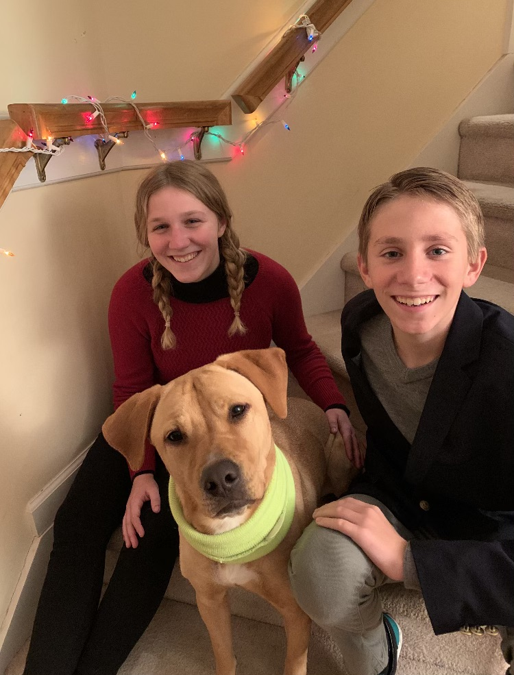
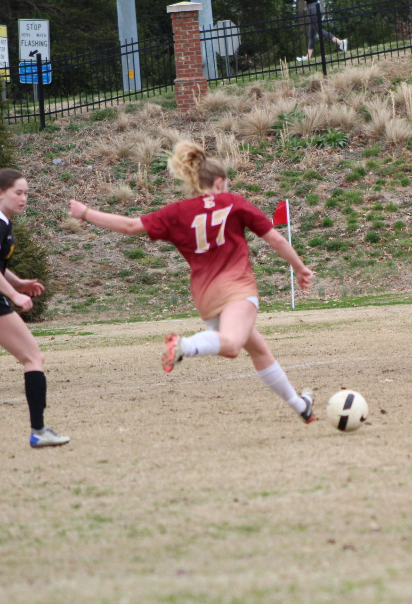
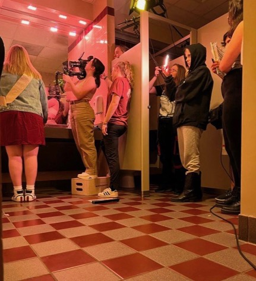
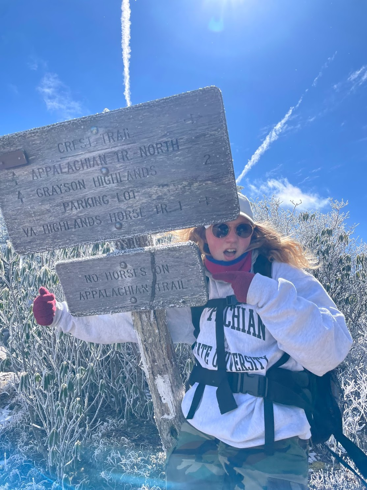

Personal Life
I live in Cary, North Carolina, about an hour away from Elon. At home, I have a brother named Gavin who is 4 years younger than me. He is a freshman at the same high school I went to, and he also plays soccer. I also have a dog named Bailey, who we adopted last March. My mom works in the global education office at Duke University, and my dad is a graphic designer. At Elon, my friends and I like to play intramural sports, watch movies, and make videos.

More Pictures
Here are some more pictures of me playing soccer at Elon, on set for a short film, and hiking in Virginia:
